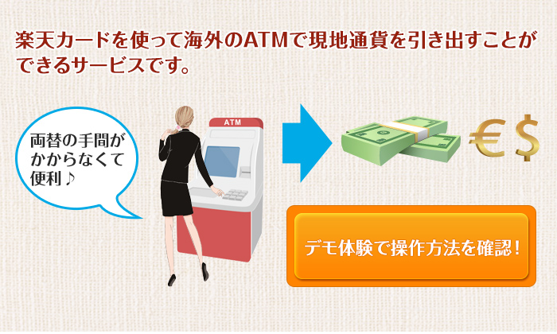
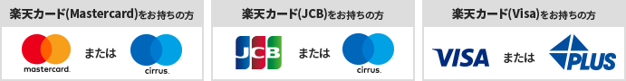

海外キャッシング
海外キャッシングサービスとは
海外ATMで現地通貨を引き出せる海外キャッシングサービス。メリットなどを、ムービーにて公開中！

デモ体験で操作方法を確認！
ご利用いただける場所
下記のステッカーが貼ってあるATMでご利用ください。

海外のATMの設置場所
Visa、Mastercardが利用できる海外のATMについては、以下のWEBサイトでご確認いただけます｡
海外キャッシングのメリット


海外キャッシングと両替どっちが便利？


- ※Visa、JCB、MasterCardの為替レートを1ウォン＝0.1円、1バーツ＝3.37円、1ドル＝112.59円、銀行の両替レートを1ウォン＝0.1130円、1バーツ＝3.8円、1ドル＝115.29円と想定して計算。(2017年10月5日時点のレート)
- ※海外キャッシングの場合は、利息とATM利用手数料(216円)を加算して表示。
- 利息の計算方法は、1回払いでのお借り入れを、57日後に全額お支払いした場合を想定。
- ※VisaまたはMasterCard決済センターが取引処理をした前日のレート(VisaまたはMasterCard指定金融機関のレート)を適用するため、海外キャッシングの利用日の為替相場レートと必ずしも一致しません。
海外キャッシングのご利用上の注意点
お支払い
海外キャッシングのお支払い方法は、1回払いとなります。(後からリボルビング払いに変更可能です。)
海外でのご利用は、ご利用データ到着に時間がかかりますので、ご請求月が遅れる場合がございます｡リボ払いの仕組みについては､｢ご返済について｣のページにてご確認ください。
暗証番号
海外キャッシングのご利用には暗証番号が必要です。暗証番号をお忘れの方は、海外旅行の前に必ずご確認ください。
- ※国や地域によっては、5桁以上の暗証番号入力を求められることがございます｡そういった場合でも、4桁の暗証番号をそのまま入力し、お手続きを続けてください｡
ご利用可能額
海外キャッシングのご利用はキャッシングご利用可能枠内でご利用いただけます。
海外でのカード紛失・盗難および海外緊急サービスについて
カード紛失・盗難時のご連絡先について
不正利用防止のため、お手続きを早急に行う必要がございます｡
紛失･盗難専用ダイヤル(24時間受付)へ至急ご連絡ください｡お手続き方法などを詳しくご案内いたします｡

海外緊急サービスについて
各カードブランド(Visa、JCB、MasterCard)が提供する海外でのカード紛失･盗難の際に利用できる緊急サービスです｡
楽天カード会員は無料で利用することができます｡
- ・緊急カードサービス
- 渡航中のみ利用可能な再発行カードを現地で手配いたします｡
- ※海外で緊急発行されるカードは日本国内では利用できないため、帰国後は必ず再発行が必要となります｡
- ・緊急キャッシュサービス
- 渡航先の現地通貨を海外キャッシュサービスとして手配いたします｡
- ※サービスのご利用には別途キャッシュサービスの利息がかかります｡
- ※各カードブランドごとに提供するサービス内容が異なります。以下のWEBサイトでご確認ください｡